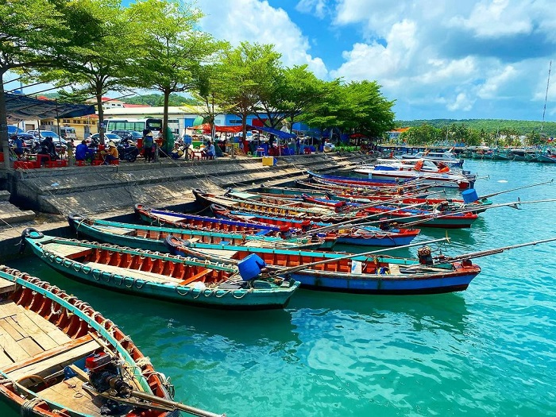
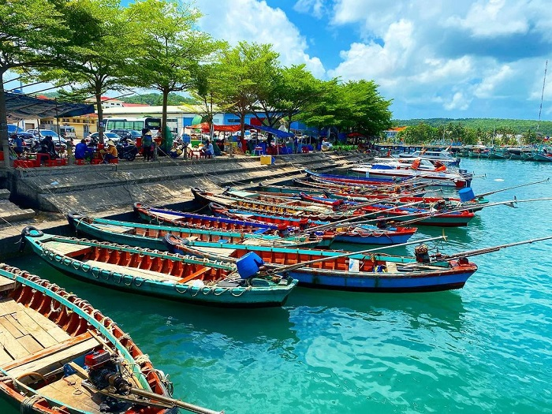
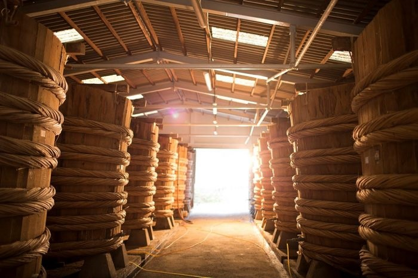
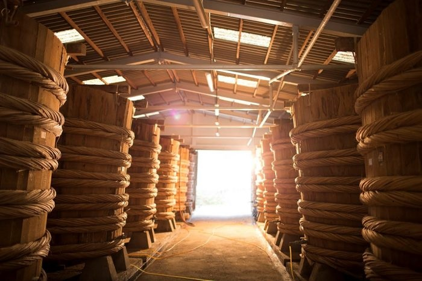

Nhà tù Phú Quốc - Địa ngục trần gian
350 Đ. Nguyễn Văn Cừ, An Thới, Phú Quốc
Nhà tù này còn có tên là nhà lao Cây Dừa.
Đây là địa điểm tham quan dành cho những ai yêu thích lịch sử, trong chiến tranh Việt Nam, tù binh chiến tranh tại Trại giam tù binh Phú Quốc đã phải chịu những hình phạt, tra tấn như đóng đinh vào tay, chân, đầu;…Trong thời gian chưa đầy 6 năm tồn tại, trại giam cây dừa Phú Quốc đã có hơn 4.000 người chết, hàng chục người bị tàn phế. Đến đây, bạn có thể quan sát thấy nhà trưng bày hiện vật xây hai tầng và khu trưng bày ngoài trời những hiện vật nguyên gốc và hầu như giữ nguyên vị trí.
Đây là trại giam tù binh trung tâm toàn Việt Nam Cộng hòa, từng giam giữ hơn 32.000 tù binh. Đến năm 1995, nơi đây được Bộ Văn hóa - Thông tin công nhận là di tích lịch sử cấp Quốc gia, cũng kể từ đó, nhà tù được mở cửa cho du khách đến tham quan.
Có lẽ khi đặt chân đến đây, các du khách đều tò mò về những câu chuyện thời chiến, những tội ác dã man mà người ta thường nhắc về thời Pháp thuộc, Mỹ - Ngụy. Những câu chuyện được tái hiện chân thực sẽ là minh chứng rõ ràng nhất cho sự tàn khốc và ác liệt của chiến tranh.


 


 
